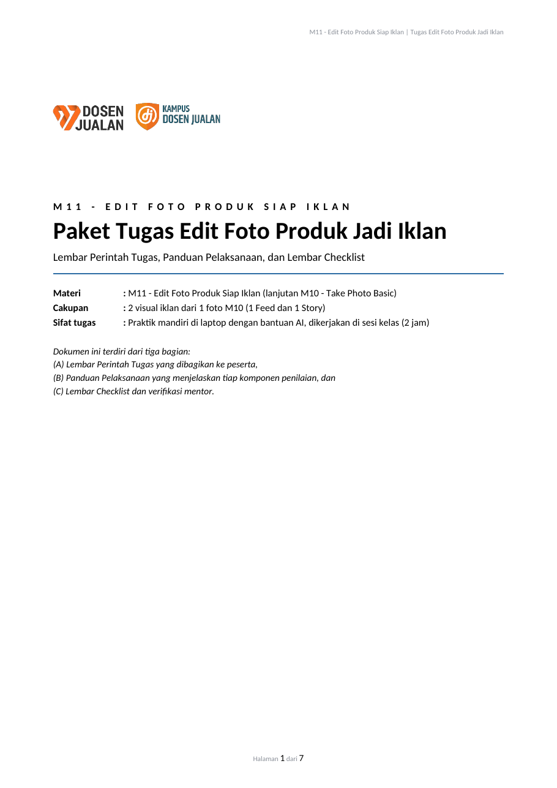
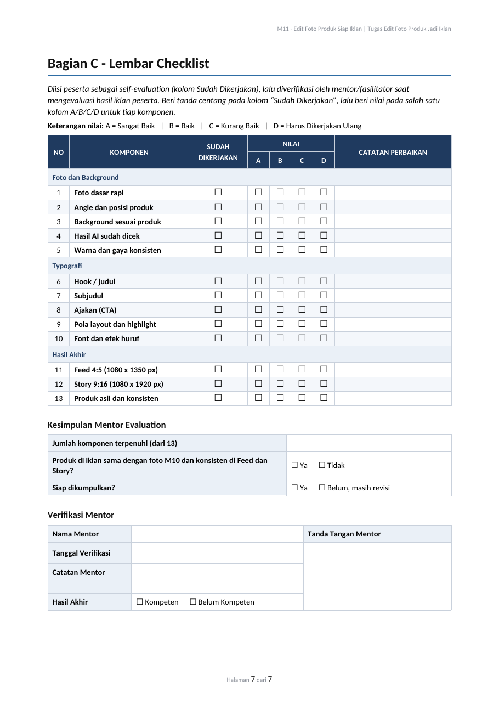
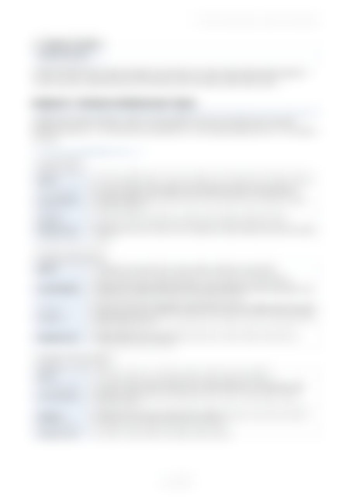
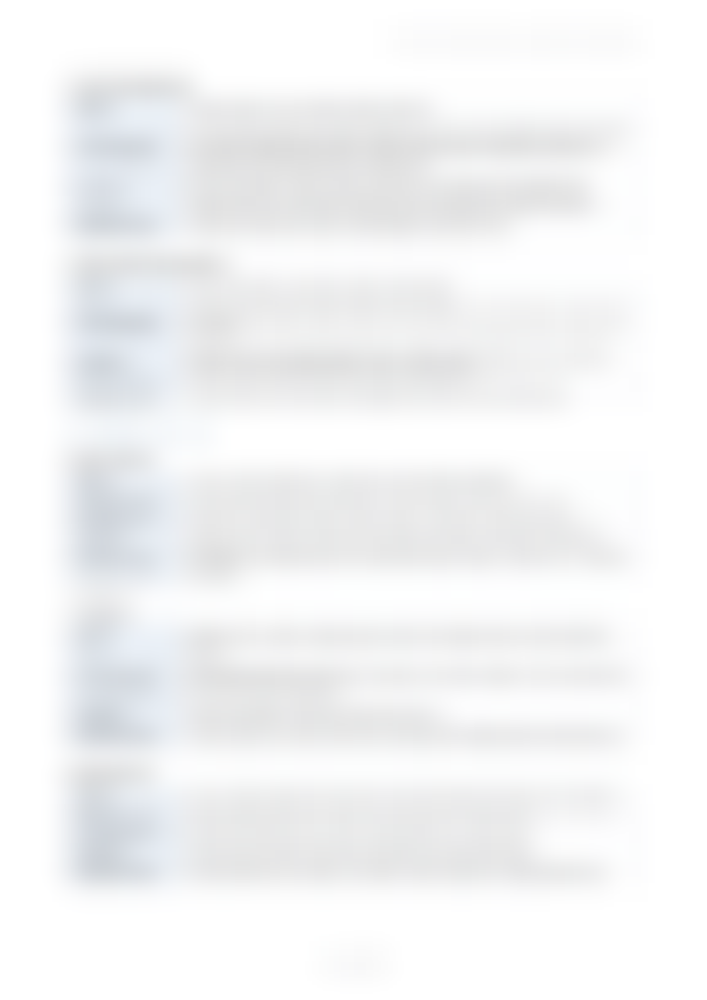
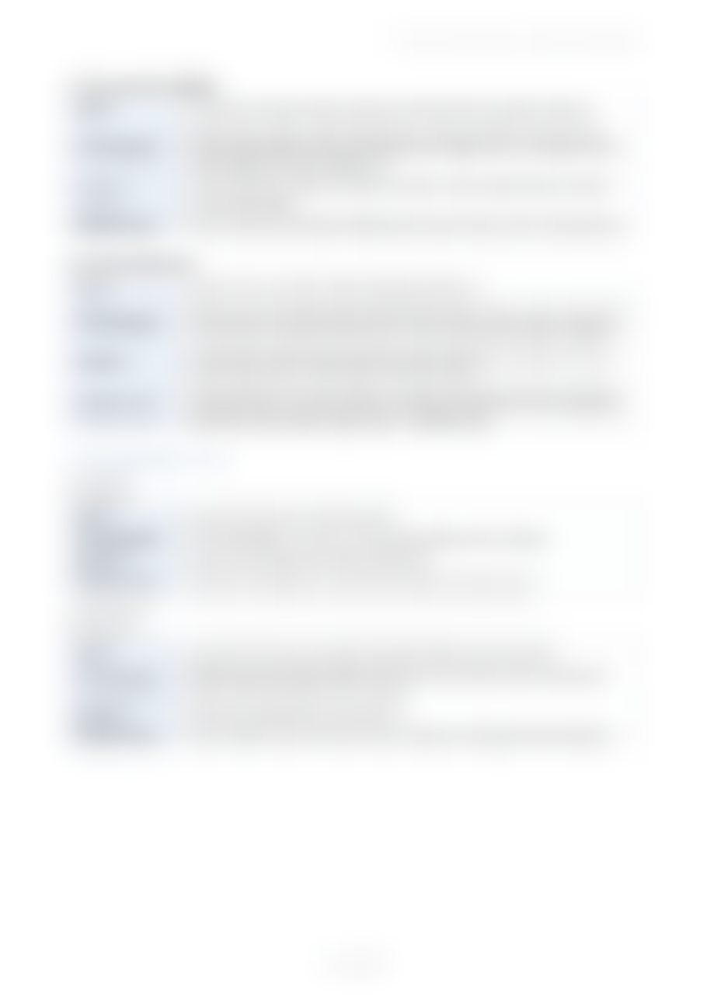

01
Track record per bab
Setiap bab tercatat: apa yang dipelajari, kapan dikerjakan, dan statusnya. Kamu bisa melihat perjalananmu dari awal sampai sekarang.
Kelas praktik jualan online
Di Kampus Dosen Jualan, setiap bab punya riwayat penilaian, setiap tugas diperiksa mentor, dan hasilnya tercatat. Saat ditanya "kamu bisa apa?", kamu tidak cuma menunjukkan sertifikat, tapi juga jejak kerjamu.
Kelas dibuka dalam batch. Cek jadwal batch terdekat di bagian daftar.
Kamu sudah pernah ikut kelas, dapat sertifikat, lalu bingung saat harus benar-benar jualan. Pertanyaannya sederhana: apa yang sebenarnya kamu bisa lakukan sekarang?
Di kelas biasa, nilai sering hanya berupa angka atau kelulusan yang tidak terlihat prosesnya. Di sini, prosesnya terbuka.
Keunggulan Kampus Dosen Jualan
Setiap bab tercatat: apa yang dipelajari, kapan dikerjakan, dan statusnya. Kamu bisa melihat perjalananmu dari awal sampai sekarang.
Setiap tugas diperiksa dengan lembar checklist yang jelas. Ada nilai A sampai D dan catatan perbaikan, bukan sekadar "sudah".
Karya yang sudah lolos verifikasi tersimpan sebagai bukti. Kamu bisa menunjukkannya ke klien, calon mitra, atau untuk portofolio.
Sertifikat tetap kamu dapatkan saat menyelesaikan kelas. Bedanya, ada jejak kerja yang mendukungnya.
Contoh nyata
Contoh ini adalah lembar tugas M11: Edit Foto Produk Siap Iklan. Halaman perintah dan halaman checklist mentor ditampilkan. Isi lembar panduan dan penilaian hanya dibuka untuk peserta.





Panduan pelaksanaan dan standar penilaian
Dibuka saat kamu ikut kelas
| Yang kamu cari | Kelas biasa | Kampus Dosen Jualan |
|---|---|---|
| Bukti kemampuan | Sertifikat | Sertifikat + riwayat penilaian |
| Cara menilai tugas | Sering tidak terlihat | Checklist mentor A sampai D |
| Jejak per bab | Tidak ada | Riwayat dan status tiap bab |
| Karya yang lolos | Tidak disimpan | Tersimpan sebagai bukti |
| Hasil kerja | Teori dominan | Praktik langsung dengan alat yang dipakai |
Cara kerjanya
Kamu mendapatkan akses ke materi dan track record pribadi.
Materi praktik diikuti dengan tugas nyata, seperti membuat iklan dari foto produkmu sendiri.
Hasil dicek dengan checklist. Ada catatan perbaikan jika belum memenuhi standar.
Status bab dan nilai masuk ke track record. Perbaiki yang kurang, lalu lanjut.
Kamu pulang dengan sertifikat dan kumpulan karya yang sudah diverifikasi.
Tidak wajib. Materi dimulai dari dasar, dan tiap bab punya langkah yang bisa diikuti satu per satu.
Sertifikat menyatakan kamu sudah menyelesaikan kelas. Track record menunjukkan bab apa saja yang kamu kerjakan, bagaimana hasilnya dinilai mentor, dan karya apa yang sudah lolos verifikasi.
Kelas ini mengajarkan cara memakai alat bantu seperti AI dan Canva secara bertanggung jawab. Hasilnya tetap harus dicek manual, dan teks ditulis sendiri agar tidak ada klaim yang tidak bisa dibuktikan.
Mentor memberi catatan perbaikan dan status "Harus Dikerjakan Ulang" atau "Belum". Kamu bisa revisi dan mengajukan lagi sampai memenuhi standar.
Durasi mengikuti jadwal batch. Silakan hubungi admin untuk jadwal dan rincian materi terbaru.
Kursi tiap batch terbatas agar mentor bisa memeriksa setiap tugas dengan teliti.
Ganti nomor WhatsApp di tautan di atas dengan nomor admin.